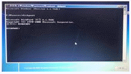
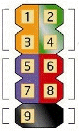

PC정비사-1급 (2021-10-24 기출문제)
1과목: PC운영체제
1. Windows 10 Pro의 로컬 컴퓨터에 대한 계정 보안정책을 설정하려고 한다. 이때 최대 암호 사용기간 기본값은?
- 32일
- 42일
- 52일
- 60일
(정답률: 34%)

2. Linux에서 모든 파일의 목록과 자세한 사항을 내림차순으로 정렬하기 위한 명령은?
- ls –alc
- ls -alk
- ls –alr
- ls -alu
(정답률: 49%)
3. 다음 중 프로세스 스케줄링의 종류가 아닌 것은?
- FIFO(First In First Out)
- Round Robin
- Shortest Job First
- Semaphore
(정답률: 62%)
4. Windows 10 Pro에 기본적으로 포함되어 있으며 스파이웨어 및 그 밖의 원치 않는 소프트웨어로부터 컴퓨터를 보호할 수 있게 해주는 소프트웨어의 이름은?
- AVAST
- BITDEFENDER
- ICF(Internet Connection Firewall)
- Windows Defender
(정답률: 84%)
5. 리눅스 명령을 이용하여 ICQA 디렉터리와 그 하위 디렉터리까지 모든 파일을 메시지없이 강제로 삭제하기 위한 명령은?
- rm –i ICQA
- rm -ir ICQA
- rm –rf ICQA
- rm -ra ICQA
(정답률: 58%)
6. 매크로내에서 여러 개의 매크로를 호출할 때 사용되는 자료 구조 중 가장 효율적인 것은?
- QUEUE
- TREE
- STACK
- LINKED LIST
(정답률: 49%)
7. 레지스트리에서 시스템에 연결된 하드웨어와 하드웨어 제어기 정보 및 소프트웨어에 대한 정보가 저장되어 있는 곳은?
- HKEY_CLASSES_ROOT
- HKEY_CURRENT_USER
- HKEY_LOCAL_MACHINE
- HKEY_CURRENT_CONFIG
(정답률: 62%)
8. 일정기간이나 특정 기능을 제한하여 사용하다가, 정식으로 사용하려면 그에 해당하는 비용을 지불해야 하는 소프트웨어는?
- 그래픽 소프트웨어
- 유틸리티
- 셰어웨어
- 백신
(정답률: 53%)
9. 하드디스크의 일부 공간을 주기억장치(Main Memory)로 사용하는 것을 뜻하는 용어는?
- 리소스(Resource)
- 가상 메모리(Virtual Memory)
- 가상 채널(Virtual Channel)
- 스택(Stack)
(정답률: 71%)
10. Windows 에서 구성 가능한 디스크 어레이 구축 방식 중 데이터 손실의 위험을 감수하더라도 고성능을 추구하기 위해 디스크를 병렬로 배치하는 방식은?
- Raid-0
- Raid-1
- Raid-4
- Raid-5
(정답률: 45%)
11. Windows 10 Pro환경에서 어느 응용 프로그램을 사용하지 않아서 이를 삭제하려고 할 때 사용하는 것은?
- [시작] - [제어판] - [장치 및 프린터 보기]
- [시작] - [제어판] - [프로그램 및 기능]
- [시작] - [모든 프로그램] - [보조프로그램] - [캡쳐 도구]
- [시작] - [제어판] - [사용자 계정]
(정답률: 83%)
12. Windows 10 Pro 의 휴지통에 대한 설명으로 잘못된 것은?
- 휴지통을 비우면 사용 가능한 하드디스크의 용량이 늘어난다.
- 휴지통의 최대크기는 사용자가 설정할 수 있다.
- 휴지통의 최소크기는 사용자가 설정할 수 있다.
- USB메모리에 저장된 파일을 삭제할 때는 휴지통에 저장되지 않는다.
(정답률: 46%)
13. 운영체제(OS)는 제어 프로그램과 처리 프로그램으로 구분이 된다. 처리 프로그램으로 올바른 것은?
- 작업 관리 프로그램
- 자원 관리 프로그램
- 데이터 관리 프로그램
- 언어 번역 프로그램
(정답률: 41%)
14. 실시간체제(Real-Time System)란 처리를 요구하는 자료가 발생할 때마다 즉시 처리하여 그 결과를 출력하거나 요구에 대한 응답을 즉시 실행하는 방식이다. 이에 대한 장점이 아닌 것은?
- 자료가 발생한 지점에서 단말기를 통한 입출력이 가능하므로 사용자의 노력이 절감된다.
- 다량의 자료가 무작위로 도착하는 경우에도 특별히 입출력자료의 저장이나 대기가 필요하지 않다.
- 처리시간이 단축된다.
- 비용이 절감된다.
(정답률: 43%)
15. 시스템을 이전상태로 복원하는 명령어로 알맞은 것은?
- rstrui.exe
- msra.exe
- regedt32.exe
- control.exe /name Microsoft.Troubleshooting
(정답률: 59%)
2과목: PC주변기기
16. 캐시 메모리는 PC의 내부에서 어디에 위치하는가?
- CPU와 메인 메모리 사이
- CPU와 주변 장치 사이
- 메인 메모리와 보조 메모리 사이
- CPU와 보조 메모리 사이
(정답률: 58%)
17. RF방식의 마우스에 대한 설명으로 올바른 것은?
- 방해물이 있으면 전혀 통과하지 못하고 10M이내의 수신거리에서만 사용가능하다.
- 무선 입출력 장치는 항상 같은 방향으로 마주 보고 있어야한다.
- 무선주파수 방식이다.
- IR방식이라고도 한다.
(정답률: 42%)
18. CISC 프로세서와 RISC 프로세서에 대한 설명 중 잘못된 것은?
- CISC : RISC 보다 레지스터의 수가 많다.
- RISC : CISC 보다 처리 속도가 빠르다.
- CISC : RISC 보다 비싸며 전력 소모가 많다.
- RISC : 고정된 길이의 명령어를 사용한다.
(정답률: 23%)
19. 갑작스런 정전에도 컴퓨터에 전원을 계속 공급해 줄 수 있는 장치는?
- Power Saver
- IPS
- UPS
- Power Supply
(정답률: 67%)
20. 두 개의 비트맵 장면이 있을 때, 앞에 있는 장면이 투명하게 보이면서 뒤에 있는 장면과 함께 섞여 보이도록 하는 그래픽 기능을 뜻하는 것은?
- 알파 블렌딩(Alpha-Blending)
- 안개 효과(Fogging)
- 안티 에일리어싱(Anti-Aliasing)
- 바이-리니어 필터링(Bi-linear Filtering)
(정답률: 50%)
21. 주기억장치의 일반적인 특성이 아닌 것은?
- 반도체 소자를 주로 사용한다.
- 비휘발성이다.
- 보조기억장치에 비해 속도가 빠르다.
- SDRAM, DDR-SDRAM, RDRAM등이 사용된다.
(정답률: 48%)
22. 주기억 장치로부터 수행할 명령을 가져와 레지스트리에 쓰기까지의 시간은?
- Search Time
- Instruction Time
- Seek Time
- Access Time
(정답률: 23%)
23. RS-232를 표준으로 인정한 단체는?
- VESA
- IEEE
- EIA
- ISA
(정답률: 25%)
24. CPU 클럭을 계산하는 방법으로 올바른 것은?
- 시스템 클럭 + 배율
- 시스템 클럭 * 배율
- 시스템 클럭 / 배율
- 시스템 클럭 = 배율
(정답률: 68%)
25. 특정 해상도나 작업 도중에 모니터 화면에 얼룩이 지고 물결 모양의 나선이 나타나는 현상은?
- 모아레
- 핀쿠션
- 버닝
- 방자
(정답률: 35%)
26. 사무실 등에서 네트워크를 통해 복수의 PC가 공유해서 사용할 수 있는 프린터로 올바른 것은?
- 단독 프린터
- 공동 프린터
- 네트워크 프린터
- 사무용 프린터
(정답률: 76%)
27. 컴퓨터의 보조기억장치로 사용하는 SSD에 대한 설명으로 올바르지 않은 것은?
- 반도체를 이용하여 데이터를 저장하는 장치이다.
- HDD에 비해 소비 전력이 적고, 소음이 없고, 발열도 낮다.
- 규격은 M.2, SATA, PCI 익스프레스(NVME 방식)를 사용한다.
- 비휘발성 낸드 플래시 메모리 사용으로 수명이 영구적이다.
(정답률: 63%)
28. 컴퓨터의 출력장치인 모니터의 종류로 올바르지 않은 것은?
- CRT
- LCD
- PDP
- FND
(정답률: 55%)
29. 라인 프린터의 인쇄방식으로 올바르지 않은 것은?
- 드럼식
- 매트릭스식
- 체인식
- 플로트식
(정답률: 12%)
30. 컴퓨터에 사용되는 CPU내의 기억장치 요소로 올바르지 않은 것은?
- ALU(Arithmetic Logic Unit)
- MAR(Memory Address register)
- MBR(Memory Buffer Register)
- PC(Program counter)
(정답률: 19%)
3과목: 디지털 논리회로
31. POST 과정의 순서가 바르게 나열된 것은?
- 시스템 버스 테스트 - 그래픽 카드 테스트 – 메모리 테스트 - 키보드 테스트 - 디스크 테스트 – P&P 기능 동작 - CMOS 내용확인 - DMI 기능 동작
- DMI 기능 동작 - 그래픽 카드 테스트 – 메모리 테스트 - 키보드 테스트 - 디스크 테스트 – P&P 기능 동작 - CMOS 내용확인 - 시스템 버스 테스트
- 시스템 버스 테스트 - P&P 기능 동작 – 메모리 테스트 - 키보드 테스트 - 디스크 테스트 – 그래픽 카드 테스트 - CMOS 내용확인 - DMI 기능 동작
- 시스템 버스 테스트 - CMOS 내용확인 – 그래픽 카드 테스트 - 메모리 테스트 - 키보드 테스트 - P&P 기능 동작 - 디스크 테스트 - DMI 기능 동작
(정답률: 31%)
32. 컴퓨터 부팅 시 'Press ＜F1＞ to continue' 라는 메시지가 나오는 원인은?
- 캐쉬 메모리 불량
- 키보드와 마우스 연결 불량
- CMOS의 그래픽 카드 설정오류
- ROM BIOS 고장
(정답률: 31%)
33. Windows에서 보호된 시스템 파일을 검색하는 명령어로 올바른 것은?
- sfc /scannow
- scanreg /restore
- sys A:C:
- convert C:/FS:NTFS/X
(정답률: 50%)
34. BIOS Setup의 기능으로 잘못된 것은?
- 입출력 데이터의 처리 및 연산기능 수행
- 메인보드의 성능과 기능을 제어
- 컴퓨터의 부팅과 하드웨어를 제어
- 컴퓨터에 장착된 장치를 인식하고 관리
(정답률: 62%)
35. BIOS 설정에서 HDD를 인식할 때 다음 중 HDD의 용량과 관련된 항목은?
- UDMA Mode
- Block Mode
- PIO Mode
- LBA Mode
(정답률: 23%)
4과목: PC유지보수
36. UEFI방식의 바이오스 설정에서 메인보드의 첫 부팅 시 일부 장치 검사를 생략하고 아주 빠른 속도로 운영체제 부팅단계까지 진입할 수 있게 해주는 옵션으로 옳은 것은?
- Vcore
- Fast boot
- M-Flash
- Supports
(정답률: 77%)
37. 두 개 이상의 하드디스크에 있는 할당되지 않은 공간영역을 하나의 논리 볼륨으로 결합하여 사용하고 하나의 디스크 용량이 가득 차면 다음 디스크로 이어서 기록하여 낭비하는 부분이 없이 효율적으로 사용할 수 있는 것으로 올바른 것은?
- 단순볼륨
- 스팬볼륨
- 스트라이프볼륨
- 미러볼륨
(정답률: 40%)
38. 부팅 중에 나타날 수 있는 에러 메시지의 종류가 아닌 것은?
- CMOS Checksum Error
- Keyboard Error
- HDD Controller Error
- System Software Abnormal
(정답률: 49%)
39. 컴퓨터 조립 작업에 대한 설명으로 잘못된 것은?
- 모든 부품은 충격을 주거나 무리한 힘을 가하지 않는다.
- 쿨링팬의 방열판과 CPU는 완전히 밀착시키지 않고 적당한 간격을 띄운다.
- 시스템 내부의 부품 등은 자성에 약하므로 자성이 있는 물건을 가까이하지 않는다.
- 110[V]/220[V]조정 스위치가 있는 전원 공급기는 사용전압에 맞도록 조정한다.
(정답률: 73%)
40. PC의 메인 보드에 사운드 카드를 설치하는 곳으로 올바른 곳은?
- PCI 슬롯
- COM1 포트
- PCI-Express 슬롯
- BANK2 슬롯
(정답률: 56%)
41. 컴퓨터가 안 켜질 때 조치사항으로 적당하지 않은 것은?
- 파워서플라이의 전원 코드를 확인한다.
- 메모리 접촉 불량을 확인한다.
- 랜케이블의 접속 여부를 확인한다.
- 바이오스를 초기화 해본다.
(정답률: 71%)
42. 컴퓨터가 갑자기 블루 스크린이 뜨더니 재부팅 후 화면에 다음과 같은 메시지가 출력 된다. 해결 방안으로 잘못 된 것은?
- Windows 설치 DVD나 USB로 부팅하여 복구모드로 진입하여 시스템 복구를 진행해본다.
- 하드디스크 베드섹터 검사를 진행해본다.
- 하드디스크 케이블 접촉불량을 점검해본다.
- 바이오스에 부팅 순서를 변경해본다.
(정답률: 17%)
43. Windows 설치 시 파일 백업 및 파티션 설정 등을 하기 위에 명령 프롬프트를 활성화하는 단축키를 찾으시오.

- CTRL + F10
- SHFIT + F10
- ATL + F10
- ALT + F4
(정답률: 29%)
44. 다음 그림은 메인보드 전면패널(F-Panel) 단자 그림이다. 맞는 장착 커넥터를 찾으시오.(표준규격에 따름)

- 1, 3 : HDD LED
- 2, 4 : POWER S/W
- 5, 7 : POWER LED
- 6, 8 : RESET S/W
(정답률: 21%)
45. Windows로 부팅한 이후 갑자기 다운이 되는 증상이 발생하는 이유로 잘못된 것은?
- CPU의 오버 클럭킹은 CPU 속도와 관련된 것으로 밀접한 관련이 없다.
- 드라이버의 버그이거나 오류가 발생하면 나타날 수 있다.
- 파워 서플라이의 전력이 부족하여도 나타난다.
- Windows의 레지스트리에 기록된 정보에 오류가 발생하면 나타난다.
(정답률: 57%)
46. 클래스 C에 해당되는 IP 주소는?
- 107.140.23.4
- 178.140.232.5
- 217.232.147.3
- 247.231.142.3
(정답률: 46%)
47. 인터넷 IP 주소에서 숫자로 표현하는 주소를 사람이 알기쉽게 문자로 표현하는 것은?
- Domain Name
- IP Address
- Java
- Web Browser
(정답률: 55%)
48. 정보 보안의 3대 요소라고 볼 수 없는 것은?
- 기밀성
- 무결성
- 가용성
- 호환성
(정답률: 52%)
49. LAN과 LAN을 논리적으로 묶는 역할을 하며 광대역 네트워크를 구축하는데 없어서는 안될 필수 장비는?
- 스위치(Switch)
- 허브(Hub)
- 라우터(Router)
- 브릿지(Bridge)
(정답률: 29%)
50. 다음은 SNMP에 대한 설명이다. 올바른 것은?
- 모든 SNMP 데이터는 인코딩 되어서 전송된다.
- 162, 163 두개의 포트를 통해 메시지를 주고 받는다.
- SNMP 메시지를 전송하는 전송계층 프로토콜은 TCP를 사용한다.
- SNMP는 접속종류에 관계없이 동일한 커뮤니티 값을 가진다.
(정답률: 22%)
5과목: PC네트워크
51. 메일 서비스와 가장 관계가 없는 것은?
- SMTP
- FTP
- POP3
- MIME
(정답률: 42%)
52. 프로토콜의 기능 중 상위 계층으로부터 받은 데이터에 자신의 제어정보를 추가하는 기능으로 올바른 것은?
- 캡슐화(Encapsulation)
- 조립(Assembly)
- 동기화(Synchronization)
- 다중화(Multiplexing)
(정답률: 27%)
53. 네트워크상에서 두 케이블 사이에 설치하여 한쪽의 신호를 증폭하여 다른 쪽으로 보내주는 역할을 하는 장비는?
- 라우터(Router)
- 리피터(Repeater)
- 브릿지(Bridge)
- 트랜시버(Transceiver)
(정답률: 19%)
54. TCP/IP를 사용하는 웹서버의 경우, 일반적으로 사용하는 포트 번호는?
- 21
- 22
- 80
- 100
(정답률: 57%)
55. 다음 Windows 10 home 에 기본으로 설치 되지 않은 msc는?
- gpedit.msc
- lusrmgr.msc
- wf.msc
- services.msc
(정답률: 37%)
56. 레지스터(Register)에 대한 설명으로 올바르지 않은 것은?
- 플립플롭을 여러 개 접속시켜 구성한다.
- 중앙처리장치의 산술논리 연산에 사용된다.
- 8비트 레지스터는 7개의 플립플롭이 필요하다.
- 시프트레지스터를 이용하여 곱셈과 나눗셈을 수행할 수 있다.
(정답률: 36%)
57. 오류검출 부호가 아닌 것은?
- 해밍 부호
- 패리티 부호
- 2-5진 부호
- 3초과 부호
(정답률: 43%)
58. 10진수 10를 2진수로 표현하기 위하여 필요한 Bit 수는?
- 1 Bit
- 2 Bit
- 3 Bit
- 4 Bit
(정답률: 52%)
59. 다음 중 2진수 011010의 2의 보수는?
- 011001
- 100101
- 100110
- 010110
(정답률: 26%)
60. 다음 기억소자 중 전원 공급이 중단되면 기억 내용이 지워지는 것은?
- EPROM
- EEPROM
- Flash Memory
- Cache RAM
(정답률: 30%)